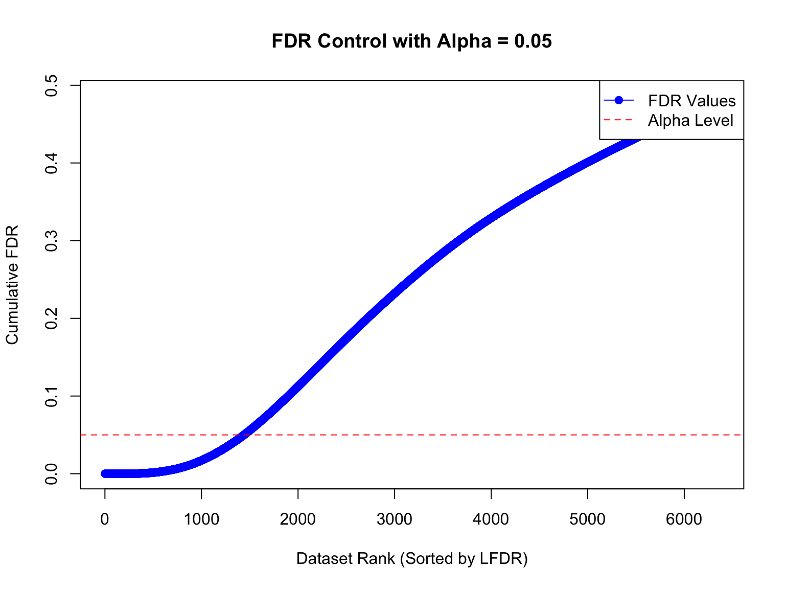
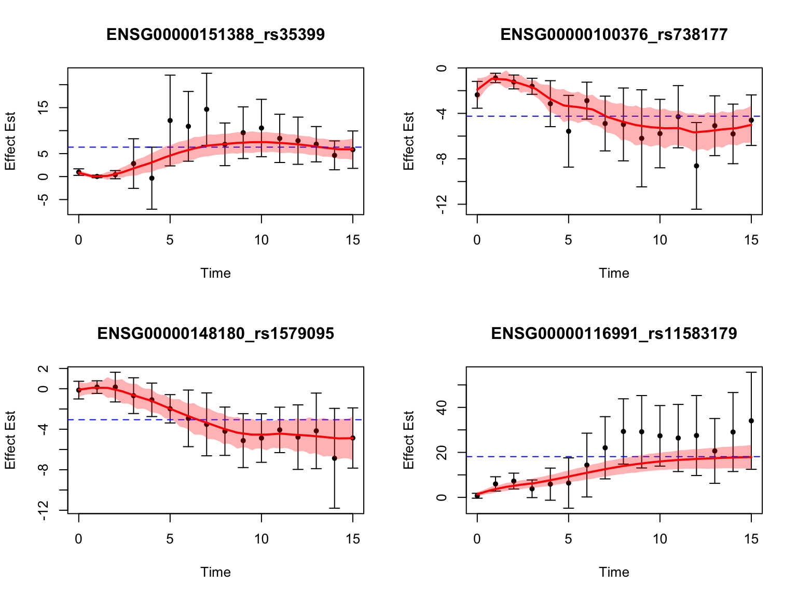

Last updated: 2025-06-18
Checks: 7 0
Knit directory: FASHresultsummary/
This reproducible R Markdown analysis was created with workflowr (version 1.7.1). The Checks tab describes the reproducibility checks that were applied when the results were created. The Past versions tab lists the development history.
Great! Since the R Markdown file has been committed to the Git repository, you know the exact version of the code that produced these results.
Great job! The global environment was empty. Objects defined in the global environment can affect the analysis in your R Markdown file in unknown ways. For reproduciblity it’s best to always run the code in an empty environment.
The command set.seed(20240507) was run prior to running
the code in the R Markdown file. Setting a seed ensures that any results
that rely on randomness, e.g. subsampling or permutations, are
reproducible.
Great job! Recording the operating system, R version, and package versions is critical for reproducibility.
Nice! There were no cached chunks for this analysis, so you can be confident that you successfully produced the results during this run.
Great job! Using relative paths to the files within your workflowr project makes it easier to run your code on other machines.
Great! You are using Git for version control. Tracking code development and connecting the code version to the results is critical for reproducibility.
The results in this page were generated with repository version 9c65140. See the Past versions tab to see a history of the changes made to the R Markdown and HTML files.
Note that you need to be careful to ensure that all relevant files for
the analysis have been committed to Git prior to generating the results
(you can use wflow_publish or
wflow_git_commit). workflowr only checks the R Markdown
file, but you know if there are other scripts or data files that it
depends on. Below is the status of the Git repository when the results
were generated:
Ignored files:
Ignored: .DS_Store
Ignored: .Rhistory
Ignored: .Rproj.user/
Ignored: analysis/.DS_Store
Ignored: analysis/.Rhistory
Ignored: code/.DS_Store
Ignored: code/.Rhistory
Ignored: code/cpp/.DS_Store
Ignored: code/dynamic_eQTL_real/.DS_Store
Ignored: code/dynamic_eQTL_real/.Rhistory
Ignored: code/function/.DS_Store
Ignored: data/.DS_Store
Ignored: data/Iyer/.DS_Store
Ignored: data/expression_data/.DS_Store
Ignored: output/.DS_Store
Ignored: output/Iyer/.DS_Store
Ignored: output/example/.DS_Store
Ignored: output/example/figure/
Ignored: output/expression/.DS_Store
Ignored: output/simulation_pollution/.DS_Store
Ignored: output/simulation_pollution/figure/
Ignored: output/vQTL_correlated/
Ignored: thought_process
Untracked files:
Untracked: code/dynamic_eQTL_real/filterVariantPerGene.R
Untracked: code/dynamic_eQTL_real/old_scripts/slurm-29475402.out
Untracked: data/dynamic_eQTL_real/
Untracked: data/expression_data/log_quantile_normalized_no_projection.txt
Untracked: data/expression_data/quantile_normalized.txt
Untracked: data/expression_data/quantile_normalized_no_projection.txt
Untracked: data/vignette/
Untracked: lfsr_most_robust.R
Untracked: mle_favor_alternative.R
Untracked: output/dynamic_eQTL_real/
Untracked: output/expression/fash2.rda
Untracked: output/expression/fash2_update.rda
Untracked: output/simulation_dynamic_eQTL/classify_dyn_eQTLs_early.RData
Untracked: output/simulation_dynamic_eQTL/classify_dyn_eQTLs_late.RData
Untracked: output/simulation_dynamic_eQTL/classify_dyn_eQTLs_middle.RData
Untracked: output/simulation_dynamic_eQTL/classify_dyn_eQTLs_switch.RData
Untracked: output/simulation_dynamic_eQTL/classify_nonlin_dyn_eQTLs_early.RData
Untracked: output/simulation_dynamic_eQTL/classify_nonlin_dyn_eQTLs_late.RData
Untracked: output/simulation_dynamic_eQTL/classify_nonlin_dyn_eQTLs_middle.RData
Untracked: output/simulation_dynamic_eQTL/classify_nonlin_dyn_eQTLs_switch.RData
Untracked: output/simulation_dynamic_eQTL/min_lfsr_summary2.RData
Untracked: output/vignette/
Untracked: overdispersion_is_important.R
Untracked: pi0est.R
Unstaged changes:
Modified: analysis/dynamic_eQTL_real.rmd
Modified: analysis/expression.Rmd
Modified: analysis/nonlinear_dynamic_eQTL_real.rmd
Modified: code/function/functions_simulating.R
Modified: code/function/functions_simulation.R
Modified: code/function/functions_simulation_eQTL_test.R
Modified: output/simulation_dynamic_eQTL/fash_fit_1.RData
Modified: output/simulation_dynamic_eQTL/fash_fit_1_noisy.RData
Modified: output/simulation_dynamic_eQTL/fash_fit_2.RData
Modified: output/simulation_dynamic_eQTL/fash_fit_2_noisy.RData
Modified: output/simulation_dynamic_eQTL/fash_fit_2_noisy_pen.RData
Note that any generated files, e.g. HTML, png, CSS, etc., are not included in this status report because it is ok for generated content to have uncommitted changes.
These are the previous versions of the repository in which changes were
made to the R Markdown (analysis/vignette.rmd) and HTML
(docs/vignette.html) files. If you’ve configured a remote
Git repository (see ?wflow_git_remote), click on the
hyperlinks in the table below to view the files as they were in that
past version.
| File | Version | Author | Date | Message |
|---|---|---|---|---|
| Rmd | 9c65140 | Ziang Zhang | 2025-06-18 | workflowr::wflow_publish("analysis/vignette.rmd") |
In this example, we will demonstrate how to use the
fashr package to implement the FASH method to study dynamic
eQTLs.
To make the computation faster, we only consider one variant for each gene, selected based on the significance of the eQTL effect at any time point.
load(paste0(data_dir, "/dynamicQTL.RData"))As a result, there will be \(J =
6362\) pairs of gene and variant, each with a time series of eQTL
effect estimates and standard errors. The data is stored in a
list called datasets_selected, where each
element is a data frame containing the summary statistics for a single
gene-variant pair. Each data frame has three columns: x
(time), y (eQTL effect estimate), and SE
(standard error of the eQTL effect estimate).
str(datasets_selected[[1]])'data.frame': 16 obs. of 4 variables:
$ y : num 0.0567 0.2339 0.3085 0.218 0.07 ...
$ x : int 0 1 2 3 4 5 6 7 8 9 ...
$ offset: num 0 0 0 0 0 0 0 0 0 0 ...
$ SE : num 0.118 0.114 0.156 0.143 0.255 ...Let’s record the unique gene names:
all_genes <- unique(sapply(strsplit(names(datasets_selected), "_"), "[[", 1))To fit the FASH model in the default way, we need to specify the
following key arguments in the fash function call:
Y: the name of the column containing the eQTL effect
estimates (here, “y”)smooth_var: the name of the column containing the time
variable (here, “x”)S: the name of the column containing the standard
errors (here, “SE”)data_list: the list of data frames containing the
summary statistics for each gene-variant pairorder: the order of the Integrated Wiener Process,
which can also be viewed as the polynomial order of the corresponding
base model (e.g., 0 for constant, 1 for linear, 2 for quadratic,
etc.)There are also some optional arguments that can be specified for more customized implementation:
grid: a vector of \(K\) (predictive) standard deviations used
to construct the \(K\) mixture
component of the FASH model.pred_step: the (predictive) step size that the
grid vector should be interpreted as. For example, if
pred_step = 1, then each value in grid
represents a standard deviation at a time point of 1 unit apart
(i.e. \(\sigma :=
SD[\beta(x+1)|\beta(t):t<x]\)).num_basis: the number of basis functions to approximate
each GP component (higher values lead to more accurate approximation but
also longer computation time).betaprec: the precision of basis function coefficients
under the base model. When set to 0, the base model is not penalized,
with a diffuse prior on the coefficients.penalty: the penalty parameter to encourage the
over-estimation of the prior weight \(\pi_0\) that corresponds to the base model.
A larger value leads to a more conservative prior weight, and a value of
0 corresponds to no penalty so \(\hat{\pi}_0\) is the maximum likelihood
estimate.In this example, we are interested in testing whether each effect
function \(\beta_j(t)\) is constant
over time, so we will use a first order FASH (i.e.,
order = 1) and set a relatively dense grid of standard
deviations based on a equally spaced grid on the log-precision
scale.
log_prec <- seq(0,10, by = 0.2)
fine_grid <- sort(c(0, exp(-0.5*log_prec)))We will fit the FASH model with the following parameters:
fash_fit1 <- fash(Y = "y", smooth_var = "x", S = "SE", data_list = datasets_selected,
num_basis = 20, order = 1, betaprec = 0,
pred_step = 1, penalty = 10, grid = fine_grid,
num_cores = 1, verbose = TRUE)
saveRDS(fash_fit1, file = paste0(result_dir, "/fash_fit1.rds"))Let’s take a look at the fitted FASH model:
fash_fit1 <- readRDS(file = paste0(result_dir, "/fash_fit1.rds"))
fash_fit1Fitted fash Object
-------------------
Number of datasets: 6362
Likelihood: gaussian
Number of PSD grid values: 52 (initial), 10 (non-trivial)
Order of Integrated Wiener Process (IWP): 1The output shows that we started with \(K =
52\) mixture components (as specified by the grid
argument) and ended up with \(36\)
components with non-zero prior weights after the empirical Bayes
estimation.
We can take a look at the estimated prior weights of the FASH model:
fash_fit1$prior_weights psd prior_weight
1 0.000000000 0.05928386
2 0.009095277 0.07237700
3 0.020241911 0.01740449
4 0.030197383 0.02351627
5 0.067205513 0.06810207
6 0.074273578 0.13937953
7 0.149568619 0.32914910
8 0.332871084 0.09316357
9 0.367879441 0.09921691
10 1.000000000 0.09840721Note that the computation of local false discovery rate (lfdr) is
heavily dependent on the prior weight \(\hat{\pi}_0\), so unless we are certain
that there is no model misspecification, it is recommended to use a more
conservative estimate of \(\hat{\pi}_0\) by updating the prior weights
using the BF_update function.
This function will re-estimate the prior weights based on the fitted FASH model and return an updated model object.
fash_fit1_update <- BF_update(fash_fit1, plot = FALSE)
fash_fit1_update$prior_weights psd prior_weight
1 0.000000000 0.6510531279
2 0.006737947 0.0412472867
3 0.022370772 0.0143816569
4 0.027323722 0.0007872304
5 0.067205513 0.0575040554
6 0.082084999 0.0177746639
7 0.135335283 0.0012126635
8 0.149568619 0.1144594827
9 0.332871084 0.0321956695
10 0.367879441 0.0349919413
11 1.000000000 0.0343922217We will use the updated FASH model (1) to detect dynamic eQTLs, at a
false discovery rate (FDR) of 0.05. The function
fdr_control will compute the lfdr as well as the cumulative
FDR for each gene-variant pair and return the indices of pairs that are
detected as dynamic eQTLs based on the specified FDR threshold.
alpha <- 0.05
test1 <- fdr_control(fash_fit1_update, alpha = alpha, plot = TRUE)1440 datasets are significant at alpha level 0.05. Total datasets tested: 6362. 
fash_highlighted1 <- test1$fdr_results$index[test1$fdr_results$FDR <= alpha]Let’s see how many genes and pairs are detected as dynamic eQTLs:
pairs_highlighted1 <- names(datasets_selected)[fash_highlighted1]
length(pairs_highlighted1)[1] 1440length(pairs_highlighted1)/length(datasets_selected)[1] 0.2263439genes_highlighted1 <- unique(sapply(strsplit(pairs_highlighted1, "_"), "[[", 1))
length(genes_highlighted1)[1] 1440length(genes_highlighted1)/length(all_genes)[1] 0.2263439It would often be helpful to visualize the posterior estimates of the eQTL effect functions for the detected dynamic eQTLs (e.g. \(P(\beta_j(t)|\boldsymbol{y},\hat{\boldsymbol\pi})\)) to see how they change over time.
The main function for that is predict, which takes the
fitted FASH model object, the index of the gene-variant pair, and a
vector of time points at which to evaluate the posterior estimates.
Here is an example of how to obtain the posterior for \(\beta(t)\) of the first variant in the list:
predict_result <- predict(fash_fit1_update, index = 1)
str(predict_result)'data.frame': 16 obs. of 5 variables:
$ x : int 0 1 2 3 4 5 6 7 8 9 ...
$ mean : num 0.247 0.252 0.254 0.254 0.254 ...
$ median: num 0.254 0.255 0.256 0.256 0.257 ...
$ lower : num 0.0921 0.1386 0.1506 0.1476 0.1309 ...
$ upper : num 0.341 0.341 0.342 0.342 0.344 ...When order > 1, the predict function
could also take an additional argument deriv = q (where q
is less than order) to return the posterior estimates of
the \(q\)th derivatives of \(\beta^{(q)}(t)\).
If we are interested in obtaining the posterior samples of the eQTL
effect function, we can set the only.samples = TRUE
argument in the predict function. This will return a list
containing the posterior samples of the eQTL effect function at the
specified time points.
predict_samps <- predict(fash_fit1_update, index = 1, only.samples = TRUE)
str(predict_samps) num [1:16, 1:3000] 0.295 0.295 0.295 0.295 0.295 ...Let’s use the above function to visualize the posterior estimates of the eQTL effect functions for the first four detected dynamic eQTLs:

sessionInfo()R version 4.3.1 (2023-06-16)
Platform: aarch64-apple-darwin20 (64-bit)
Running under: macOS Monterey 12.7.4
Matrix products: default
BLAS: /Library/Frameworks/R.framework/Versions/4.3-arm64/Resources/lib/libRblas.0.dylib
LAPACK: /Library/Frameworks/R.framework/Versions/4.3-arm64/Resources/lib/libRlapack.dylib; LAPACK version 3.11.0
locale:
[1] en_US.UTF-8/en_US.UTF-8/en_US.UTF-8/C/en_US.UTF-8/en_US.UTF-8
time zone: America/Chicago
tzcode source: internal
attached base packages:
[1] stats graphics grDevices utils datasets methods base
other attached packages:
[1] fashr_0.1.1 workflowr_1.7.1
loaded via a namespace (and not attached):
[1] Matrix_1.6-4 jsonlite_2.0.0 compiler_4.3.1
[4] promises_1.3.3 Rcpp_1.0.14 stringr_1.5.1
[7] git2r_0.33.0 parallel_4.3.1 callr_3.7.6
[10] later_1.4.2 jquerylib_0.1.4 yaml_2.3.10
[13] fastmap_1.2.0 lattice_0.22-6 R6_2.6.1
[16] BayesGP_0.1.3 mixsqp_0.3-54 knitr_1.50
[19] tibble_3.2.1 rprojroot_2.0.4 TMB_1.9.15
[22] bslib_0.9.0 pillar_1.10.2 rlang_1.1.6
[25] cachem_1.1.0 stringi_1.8.7 httpuv_1.6.16
[28] xfun_0.52 getPass_0.2-4 fs_1.6.6
[31] sass_0.4.10 cli_3.6.5 magrittr_2.0.3
[34] ps_1.9.1 grid_4.3.1 digest_0.6.37
[37] processx_3.8.6 rstudioapi_0.16.0 irlba_2.3.5.1
[40] lifecycle_1.0.4 vctrs_0.6.5 evaluate_1.0.3
[43] glue_1.8.0 numDeriv_2016.8-1.1 whisker_0.4.1
[46] LaplacesDemon_16.1.6 rmarkdown_2.28 httr_1.4.7
[49] tools_4.3.1 pkgconfig_2.0.3 htmltools_0.5.8.1